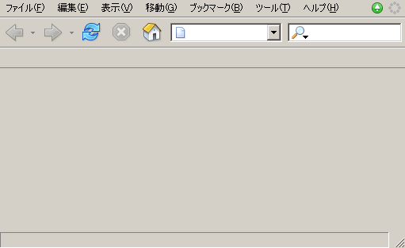
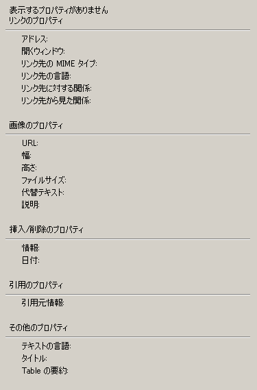
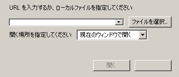
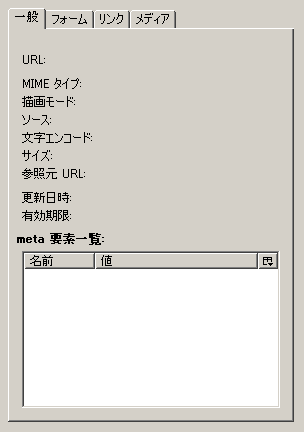
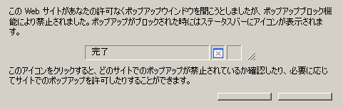
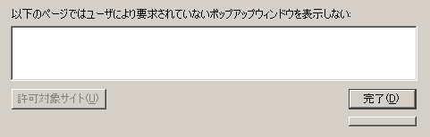
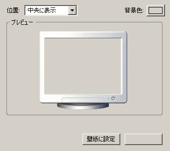

変更を行うとき、読んでおいて損は無いのがbrowser.xul
基本的な部分はここにたいてい記述されています
- browser/aboutDialog.xul

- browser/browser.xul
- 
- browser/metaData.xul
- 
- browser/hiddenWindow.xul
- browser/macBrowserOverlay.xul
- browser/openLocation.xul
- 
- browser/pageInfo.xul
- 
- browser/pageReportFirstTime.xul
- 
- browser/pageReport.xul
- 
- browser/setWallpaper.xul
- 
- browser/web-panels.xul

- browser/pref/pref.xul
- browser/pref/pref-themes.xul
- browser/pref/pref-privacy.xul
- browser/pref/pref-navigator.xul
- browser/pref/pref-masterpass.xul
- browser/pref/pref-languages.xul
- browser/pref/pref-fonts.xul
- browser/pref/pref-features.xul
- browser/pref/pref-features-images.xul
- browser/pref/pref-extensions.xul
- browser/pref/pref-connection.xul
- browser/pref/pref-calibrate-screen.xul
- browser/pref/pref-advancedscripts.xul
- browser/pref/pref-advanced.xul
- browser/pref/plugins.xul
- browser/migration/migration.xul
- browser/history/history-panel.xul
- browser/cookieviewer/CookieViewer.xul
- browser/cookieviewer/CookieExceptions.xul
- browser/bookmarks/selectBookmark.xul
- browser/bookmarks/bookmarksProperties.xul
- browser/bookmarks/bookmarksPanel.xul
- browser/bookmarks/bookmarksManager.xul
- browser/bookmarks/addBookmark2.xul
- browser/bookmarks/addBookmark.xul